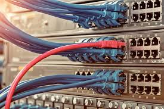

Les protocoles de communication définissent de façon formelle et interopérable la manière dont les informations sont échangées entre les équipements du réseau.
Des logiciels dédiés à la gestion de ces protocoles sont installés sur les équipements d'interconnexion que sont par exemple les commutateurs réseau,
les routeurs, les commutateurs téléphoniques, les antennes GSM, etc.
Les fonctions de contrôle ainsi mises en place permettent une communication entre les équipements connectés.
Le protocole probablement le plus répandu est IP qui permet l'acheminement des paquets jusqu'à leur destination.
Deux protocoles de niveau supérieur UDP et TCP permettent le transport de données. Le premier permet l'envoi de données d'une manière non fiable
(aucune garantie de la réception du paquet par le destinataire). L'autre permet au contraire une transmission fiable des données (garantie de la réception du paquet par le destinataire et aussi par accusés de réception).
Les services réseau se basent sur les protocoles pour fournir, par exemple:
